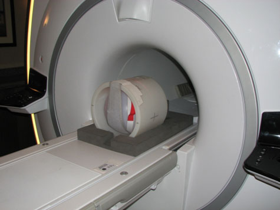
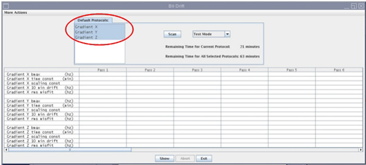
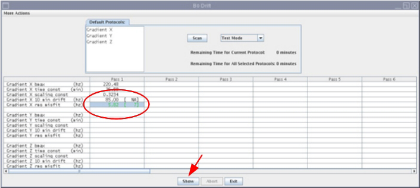
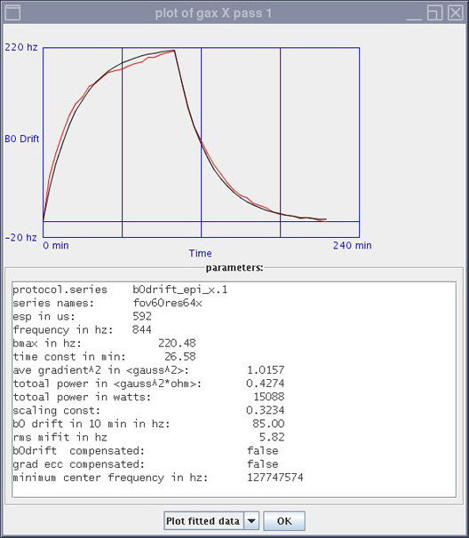
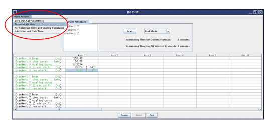

Operating Documentation
Direction 5670006, Rev# 1
Discovery MR750w GEM Service Methods
Module Version 4.0, Version Date 10/20/11
Operating Documentation |
| Required Persons | Preliminary Reqs | Procedure | Finalization |
|---|---|---|---|
| 1 | Not Applicable | 1.5 Hours | Not Applicable |
| Item | Qty | Effectivity | Part# | Manufacturer | |
|---|---|---|---|---|---|
| Body TLT Phantom and Sphere | 1 | - | 2360037 | - | |
| Condition | Reference | Effectivity |
|---|---|---|
All other applicable calibrations must be complete. | - | - |
Heat Exchanger must be within operating limits. | - | - |
System must be idle for a minimum of 2 hours. | - | - |
Place the TLT phantom and sphere on the table as shown in the illustration below. Position the phantom in the center of the cradle and center it on the P.A. coil. To achieve the best test measurement, the phantom must be located in the center (long direction) of the cradle.
Illustration 1: TLT Phantom and Sphere on MR Table

| NOTE: | The MR table in the photograph is a GEM table. A non-GEM table is also valid for this configuration. |
Start the B0 Drift Calibration Tool.
(Restricted Service tools available to GE Field Service) Verify your service key is installed.
Select Calibration Wizard from the Calibration menu and Click here to start this tool. The Calibration Wizard starts.
Select B0 Drift Calibration from the menu. Review and OK the pre- and post-dependencies. Select Click here to start this tool.
If you are unable to start the Restricted Service tools, use the non-proprietary method in Step 2.b.
(Non-proprietary Service Tools) From the Common Service Desktop, select Calibration > Bo Drift Calibration from the Calibration men. Select Click here to start this tool.
The B0 Drift window appears.
Illustration 2: B0 Drift Window in Test Mode with X, Y, and Z Axes Highlighted

Highlight the axis that is being validated by moving the cursor over the specific axis. See Illustration 2. To select a second axis, press <Shift> and left click with the mouse.
Select Test Mode. The total time required to run B0 Drift Test Mode is 63 minutes.
Press Scan.
When the test is complete, it will display the compensated drift rate for the selected axis. Values in green are passing; red indicates failure.
If one axis fails, re-execute B0 Drift Calibration for only the failed axis.
The B0 Drift Tool has additional features. To view a plot, highlight the specific axis, then click on the [Show] button.
Illustration 3: View a Plot from B0 Drift Window

Illustration 4: Plot Generated from Pass 1

Illustration 5: B0 Drift Tool Window Showing More Actions

Zero Out Cal Parameters. This function zeroes out the calibration file. It can be executed for one or all three axis.
Re-Analysis Only. This function allows you to re-analyze or view a previously executed pass (existing data).
Re-Calculate Time and Scaling Constants. This function allows you to use existing data to put back into the calibration file of the system. If you want to use existing data, first do [Re-Analysis Only]. Then select the [Re-Calculate Time and Scaling Constants]. Then select the axis that you want to execute, in the new pop-up, then select [Re-Calculate Time and Scaling Constants] and then select [Apply].
Add Scan and Wait Time. This option should not be used.
No finalization steps.